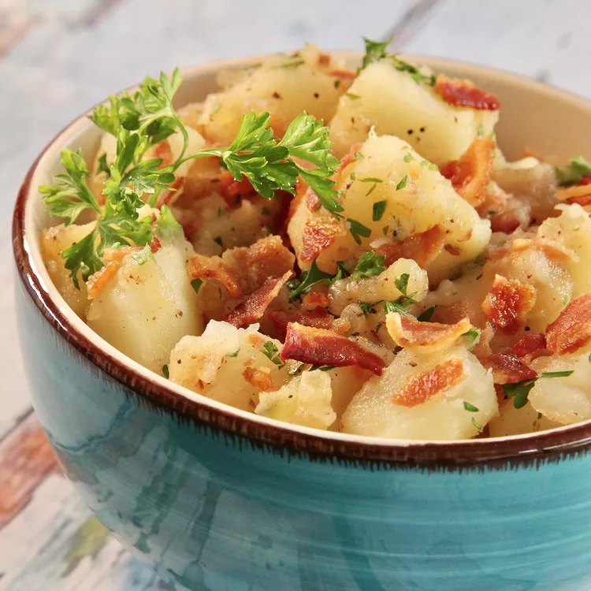

Authentic German Potato Salad

Desription
This is my mother's recipe for authentic German potato salad. Everyone, German or not, loves it.
It is easy to double the recipe as well. I often bring it to potlucks, and we also have it at home on special occasions.
There are usually no leftovers, but if there are, they don't last long!
Unlike mayonnaise-based American potato salads, German potato salad is tossed in a vinegar-based dressing made with bacon drippings.
It is usually served warm instead of cold, but some people prefer to serve it at room temperature.
Ingredients
- Potatoes: We recommend using waxy potatoes (such as New Potatoes) because they hold their shape well. Yukon Gold, an all-purpose variety, is also a good choice.
- Bacon: Bacon (and its grease) adds tons of meaty flavor to the hearty German potato salad.
- Onion: An onion, cooked in bacon grease, lends even more complexity and flavor.
- Vinegar: White vinegar adds tanginess that cuts through the richness from the potatoes and bacon.
- Sugar: A bit of white sugar gives the savory potato salad subtle sweetness.
- Seasonings and herbs: This German potato salad recipe is seasoned with salt, pepper, and fresh parsley.
Steps
- Place potatoes in a large pot and add water to cover by at least 1 to 2 inches; bring to a boil. Cook until potatoes
are easily pierced with a fork, about 10 minutes. Drain, and set aside to cool.
- While the potatoes are cooking, place bacon in a large, deep skillet over medium-high heat. Fry until browned and crisp, 10 to 12 minutes, turning as needed.
Transfer bacon to a paper towel-lined plate and crumble when cool enough to handle. Leave bacon grease in the skillet.
- Cook onion in the bacon grease over medium heat until browned, 6 to 8 minutes. Add vinegar, sugar, water, salt, and pepper to the pan and bring to a boil.
- Once boiling, add potatoes, and 1/2 of the crumbled bacon. Cook until heated through, 3 to 4 minutes.
- Transfer warm potato salad to a serving dish and sprinkle remaining bacon over top. Garnish with parsley. Serve immediately.